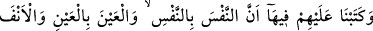
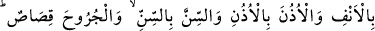
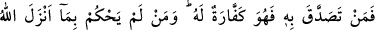
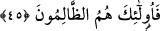

“Şu halde” Ey ileri gelenler ve âlimler! Kim olursa olsun “insanlardan korkmayın.”
Tevrat’ın ahkâmına riâyette ve korumada sizden önceki peygamberlerle onların
taraftarlarına tâbî olun.
Tevrat’ın hukukuna riâyetsizlik husûsunda “Ben’den korkun.” Kaldı ki nasıl olur da
Tevrat’a kötü emellerle el uzatabilirsiniz? Bu sebeple hüküm verirken Allah’tan
başkasından korkmaktan, zâlimin zulmünden korkarak veya bir büyüğün takibinden
çekinerek hüküm verirken yağcılık yapmaktan nehyedilmişlerdir. Bu âyet, bu hükme
müslüman hâkimlerin de dâhil olduğuna delalet etmektedir.
“Âyetlerimi” rüşvet, makam ve diğer dünyevî zevklerden “az bir bedel karşılığında
satmayın.” Çünkü onlar ne kadar büyük olurlarsa olsunlar, özellikle o âyetlerle ameli
terk ederek elden kaçırdıklarına nisbetle çok az ve değersizdirler. Satmak, bir ticaret
malını parayla değiştirmektir. Yani, para karşılığında onu almaktır. Daha sonra aldığına
rağbet ederek, verip terkettiğinden yüz çevirerek kendisine ait aynî veya mânevî bir
şeye karşılık başka bir şeyi almak için istiâre olunmuştur. Yani karşılığında kendiniz
için bir şey alarak Tevrat’ta bulunan âyetlerimi yerlerinden çıkartarak, onlarla ameli
terkederek değiştirmeyiniz.
Bu dünya bir cife, pislik ve değersiz
Böyle murdar bir varlığa karşı nasıl açgözlü olabilirim?
İster otorite sâhibi birinden korkmak gibi bir zararı savmak için olsun, isterse dünyevî
hazlara tamah etmek gibi bir menfaati celbetmek için olsun açık olarak tahrife
yönelmeleri yasaklanmıştır.
Onları yaptığı tahrifte olduğu gibi “Kim” olursa olsun hor görerek veya inkar ederek
“Allah’ın indirdiğiyle hükmetmezse” Allah’ın indirdiğini hor görmeleri ve ondan
başkasıyla hükmetmekte inat etmelerinden dolayı “işte onlar kâfirlerin ta
kendileridir.” İşte bu sebeple Allah onları zâlimler ve fâsıklar diye de nitelendirmiştir.
Kâfirlikleri Allah’ın indirdiğini inkar etmeleri; zâlimlikleri, Allah’ın indirdiğinin
hilâfına hüküm vermeleri ve fâsıklıkları ise Allah’ın indirdiğinden sapmaları
sebebiyledir.
45- Tevrat’ta onlara şöyle yazdık: Cana can, göze göz, buruna burun, kulağa
kulak, dişe diş ve yaralara karşılıklı kısas vardır. Kim bunu (kısası) bağışlarsa
kendisi için o keffâret olur. Kim Allah’ın indirdiği ile hükmetmezse işte onlar